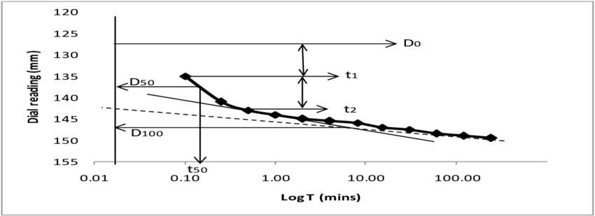
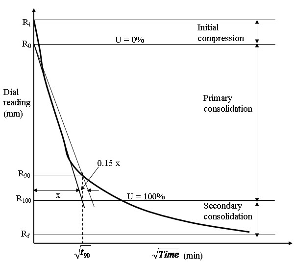

CALCULATIONS:-
1. Height of solids (HS) is calculated from the equation
HS = WS/G Y w A
2. Void ratio. Voids ratio at the end of various pressures are calculated from equation
e = (H * HS)/HS
3. Coefficient of consolidation. The Coefficient of consolidation at
each pressures increment is calculated by using the following equations
:
i. Cv = 0.197 d2
/t50 (Log fitting method)
ii. Cv = 0.848 d2/t90
(Square fitting method) In the log fitting method, a plot is made
between dial reading and logarithmic of time, the time corresponding to
50% consolidation is determined.
In the square root fitting method, a plot is made between dial readings
and square root of time and the time corresponding to 90% consolidation
is determined. The values of Cv are recorded in table 2.
4. Compression Index. To determine the compression index, a plot of voids ratio (e) Vs logt is made. The initial compression curve would be a straight line and the slope of this line would give the compression index Cc.
5. Coefficient of compressibility. It is calculated as follows
av =
0.435 Cc/Avg. pressure for the increment
where Cc = Coefficient of
compressibility
6. Coefficient of permeability. It is calculated as follows
K = Cv.av
*(unit weight of water)/(1+e).
Graphs
1. Dial reading VS log of time or

Dial reading VS square root of time.

2. Voids ratio VS logσ (average pressure fe increor thment)